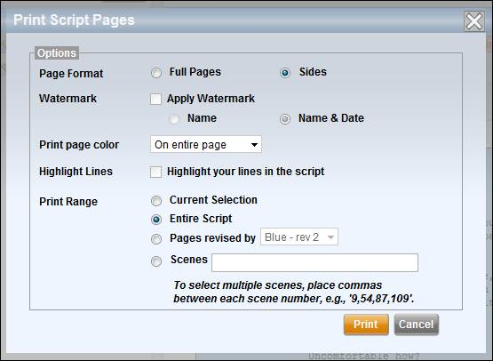

The Scripts screen
allows you to view a list of the script revisions that have been created within
your production or episode, and view script page text for any of the revisions.
On the left side of
the screen is the script revision list.
As new revisions of your script are uploaded or input, each revision is
tracked here. The list displays the
name, page color, page count and scene count for each revision. A green checkmark under the "T"
column indicates if the revision includes page text. A yellow star indicates that the revision is
the “Revision in Use” throughout the production or episode.
Note: The Revision in Use is the script revision that is actively used for
the production or episode. The scenes
from the Revision in Use are used for the breakdown pages, strip board, all
scheduling, and all reporting.
Newer revisions
appear at the top of the list.
There are two ways to input a script into Lightspeed - via manual data entry or via automatic import. We highly recommend using the automatic import feature as this will save many hours of time. Lightspeed can import from the following file types: Adobe .pdf, Final Draft 7 Tagger .xml, Final Draft 8 .fdx, and Screenplay Exchange .sex. Pdf is recommended.
When you use the
automatic import feature of Lightspeed the process differs depending on whether
or not you have imported prior revisions.
If you have no prior revisions, then the import process allows you to
review the scene list and save the script.
If you do have prior revisions, then the import process conducts a scene
list comparison between the new revision and your current revision in use.
Use the following steps to import the first script revision for the production or episode:
1. Select the Add button above the script revision list.
The Add New Script Revision popup window appears.
2. Enter the revision's Title and select a Page Color if applicable.
Note: Lightspeed supports 20 different script revision levels using industry standard colors. However, if you are not yet tracking page revisions you may select the color white for all of your imports.
3. Select Automatic Import.
4. Use the controls at the bottom of the popup to select and upload the script import file.
The script file is uploaded and made available to Lightspeed.
5. Select whether or not to include Scene Elements and/or Script Text.
Note: If you do not include Script Text during your import then script pages will be unavailable to Lightspeed users.
6. Click the Continue button when you are ready to import the script.
The Import Process parses the script and breaks it down into individual scenes. When the import completes successfully, an import review screen is displayed showing the number of scenes, pages, and sets in the script. Additional information, such as if any scenes are missing scene header information, is shown in a text box.
7. Select the Next button to proceed.
A scene list is displayed.
8. Review the scene list. You may edit the page count or script day for each scene.
9. Select the Finish button when complete.
The revision appears in the script revision list.
Note: If you've included script text in your import but find that your
script pages are unavailable, check your Project and Production preferences to
ensure that script page display is enabled.
Use the following steps to import a script revision for the production or episode when prior revisions have already been imported:
1. Select the Add button above the script revision list.
The Add New Script Revision popup window appears.
2. Enter the revision's Title and select a Page Color if applicable.
Note: Lightspeed supports 20 different script revision levels using industry standard colors. However, if you are not yet tracking page revisions you may select the color white for all of your imports.
3. Select Automatic Import.
4. Use the controls at the bottom of the popup to select and upload the script import file.
The script file is uploaded and made available to Lightspeed.
5. Select whether or not to include Scene Elements and/or Script Text.
Note: If you do not include Script Text during your import then script pages will be unavailable to Lightspeed users.
6. Click the Continue button when you are ready to import the script.
The Import Process parses the script and breaks it down into individual scenes. When the import completes successfully, an import review screen is displayed showing the number of scenes, pages, and sets in the script. Additional information, such as if any scenes are missing scene header information, is shown in a text box.
7. Select the Next button to proceed.
A scene list is displayed.
8. Review the scene list. You may edit the page count or script day for each scene.
Note that Breakdown Page numbers are not assigned to the new script until it has been compared with the current revision in use.
9. Select the Next button to proceed.
The script comparison screen is displayed.
The new script is compared with the script revision currently in use. The new script appears on the left side and the current script is on the right side.
The purpose of this comparison is to identify which scenes in the new script match scenes in the current revision and then, once matched, transfer the script elements from the current script's breakdown into the new script.
For example, if you've gone to the trouble of breaking down scene 95 in the current script and have tagged character, prop, stunt, and vehicle elements then you will likely want to transfer those elements into scene 95 in the new script. The script comparison screen allows you to do just that.
Scenes of each revision are matched with one another according to various criteria including scene number and scene breakdown. In the middle of the screen is the Comparison column which provides a high level analysis of how similar the matched scenes are. Possible values are:
· Match: The scene appears to be a match between the new and current revisions
· No Match: The scene does not exist in either the new or current revision
· % Similar: The scenes are not a perfect match, but appear to be somewhat similar.
The degree of similarity is represented as a percentage from 10% to 90%, based on how many parts of the scene (e.g., location, day/night setting, page length) are equivalent between the current and new versions. Items that are identical between the two scenes are displayed in black and ones that are different are displayed in red.
Click on the Comparison value to change it to Accepted. When you mark a line item as accepted, it means that you accept the scenes as a match. You can also Accept all matching and/or similar scenes using the buttons at the top of the comparison.
Once you've Accepted the scenes that you have determined are matches, transfer the script elements from the current script to the new script by clicking on the Transfer button. Only elements from Accepted scenes will be transferred.
If the script comparison screen displays scenes that are misaligned from one another (for example, if scene 6 in the new revision is lined up with scene 7 in the current revision) then use the arrow buttons in the Add columns to insert blank rows and properly align the scenes.
10. Accept scene matches and Transfer elements from the current script revision to the new script revision.
11. Select the Next button to proceed.
The scene list is again displayed.
12. Review the scene list. Again you may edit the page count or script day for each scene.
13. Select the Finish button when complete.
The revision appears in the script revision list.
This new revision is not automatically set as the current “Revision in Use”. You can make it the Revision in Use by selecting the revision from the list and checking the Use this Revision checkbox in the right pane.
Note: If you've included script text in your import but find that your
script pages are unavailable, check your Project and Production preferences to
ensure that script page display is enabled.
If you choose not to use the automatic script import process then you can manually input a script. Manual script entry consists of adding each scene to the script manually, and then inputting scene data into each breakdown page.
When you manually enter a script into Lightspeed only the breakdown page data is captured. Individual script pages are not input into the system and therefore cannot be displayed onscreen.
Only the first revision of a script may be manually entered. It is possible to import additional revisions using the automatic import feature.
Use the following steps to manually enter a script revision into the production or episode:
1. Select the Add button above the script revision list.
The Add New Script Revision popup window appears.
2. Enter the revision's Title and select a Page Color if applicable.
3. Select Manual Entry.
4. Click the Continue button.
Scene 1 is created and you are presented with its breakdown page.
5. Edit the breakdown page and input all of the information for scene 1. When done, click on Save.
6. Select the Add button above the scene list to create the next scene.
7. Repeat the above two steps until all of the scenes are entered.
The right pane
displays the selected script revision’s pages.
If script text is not visible, either because it was not imported or
because the project preferences forbid script view, then the pages will display
as blank pages.
Within the revision view screen are the revision’s page color, the timestamp when the revision was entered, and the script page display. You can choose to view script pages based on a range of pages, scenes, or shoot days. If you view script pages by shoot day, the schedule for the main unit (as opposed to a 2nd unit) is used.
Lightspeed allows you to edit the Title and Page Color for a given revision. Click on the Edit button to change either of these fields.
If you need to edit individual scene data, go to the Scene Breakdown screen.
Lightspeed allows you to delete the most recent script revision entered. Intermediate revisions may not be deleted due to the necessity of maintaining accurate page level revision tracking.
Use the following steps to delete a script revision:
1. Select the script revision from the left hand list.
2. Select the Delete button in the upper right.
The Delete Script Revision popup window prompts you to confirm.
3. Click on the Delete button.
The script revision is removed from the production.
Warning: Once a script revision has been deleted, it cannot be restored.
While viewing a highlighted revision you can perform a number of other actions. Each is listed below.
If the selected script revision is not the “Revision in Use”, you can make it the revision in use by checking the checkbox next to the field Use this Revision.
Because changing the revision in use affects the entire production or episode, a popup window appears asking you to confirm the selection.
Use the controls in the Display area to select which script pages you would like to view. Pages may be selected by page number, scene number, or shooting day.
The Print button is used to print script pages to a .pdf document. The Print Script Pages popup offers several print options.
Print Script Pages

1. Select a Page Format
· Full Pages: Print the script pages on full size paper.
· Sides: Print the script pages half-size. Two pages per side.
2. Apply a Watermark
Depending on whether or not script page watermarking is activated for your production (see the Production Preferences mini-tab) you can apply a personalized watermark to the script.
You can watermark the script with the person's name or with the name and current date.
3. Choose how to display Page Colors
· On Entire Page: The page color fills the entire page.
· On Right Edge Only: The page color is displayed as a strip of color on the right side of the page.
4. Highlight Your Lines
If a Cast member, choose whether or not to highlight your lines.
5.
Select a
· Current Selection: Print the pages currently selected in the onscreen view.
· Entire Script: Print all script pages.
· Pages Revised By: Print only the pages of certain color for the current revision. Consider these examples:
o Example 1:
If you are viewing the Blue revision and select "Blue" pages, you will print all pages that were updated to Blue.
o Example 2:
If you are viewing the Pink revision and select "Blue" pages, you will print all pages that were updated to Blue but not the pages that were updated to Pink. In other words, only the pages that are still Blue within the Pink revision will be printed.
Note: Different script revisions will usually have different sets of colored pages. Selecting the "pages revised by" option will use the currently viewed script as the basis of determining page colors.
· Scenes: Print the pages for the inputted scene numbers.
The Email button allows you to send a .pdf copy of the selected script pages to members of the production. Use the popup window to select a script page range and then select the recipients from the Cast & Crew List.
If a revision contains script text and you would prefer to remove the text, use the Delete Text button. Delete Text removes dialog and action text from the script but does not affect any data on the breakdown pages. A popup window confirms the deletion.
Warning: Once script text has been deleted, it cannot be restored.
Comparing two revisions is similar to the script comparison step during script import. The scene lists from two separate revisions are compared side by side.
Use the following steps to compare two script revisions:
1. Select the Compare button.
The Compare Scripts popup window appears.
2. Select a script revision from the popup list.
3. Click on the Compare button.
The selected scripts are compared side by side. Each scene is matched according to scene number. If one revision contains a scene that is not in the other revision, then the text “Scene does not exist” appears in place of the scene heading.
4. Select the Return button to return to the Script Revisions screen.
Related Topics